- Each PDF is one piece. Page 1 is the front, page 2 is the back. Print double-sided with the flip shown for that piece.
- Always print at 100% / Actual size. Never “Fit to page” or “Shrink to fit”: that changes the folds and the cut lines.
- OFFICE files are Letter size for a desk printer. PRINTSHOP files have 0.125 in bleed and crop marks, and the PDF trim box is set.
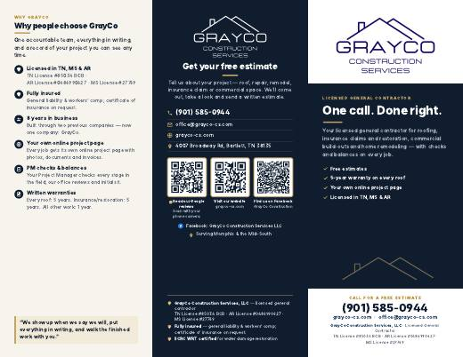
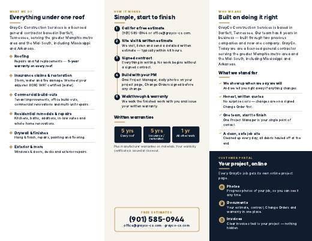
General brochure (all services)
Tri-fold · Letter 11 × 8.5 in landscape · 2 pages (outside, inside) · Everything GrayCo does — events, walk-ins, any lead
OFFICE brochure-general.pdf
Letter paper · Landscape · Double-sided, flip on SHORT edge · 100% / Actual size (no “Fit to page”) · fold in thirds: inside panels in, cover on top
PRINTSHOP brochure-general-printshop.pdf
11.25 × 8.75 in incl. 0.125 in bleed + crop marks → trims to 11 × 8.5 in · 2-sided: page 1 = outside, page 2 = inside, turn on the SHORT edge · 100 lb gloss text · letter (roll) fold; the left outside panel is the 1/16 in narrower fold-in flap
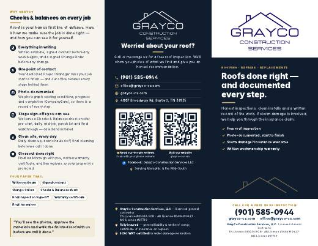
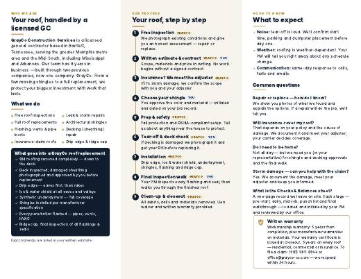
Roofing brochure
Tri-fold · Letter 11 × 8.5 in landscape · 2 pages (outside, inside) · Roofing leads and roof proposals
OFFICE brochure-roofing.pdf
Letter paper · Landscape · Double-sided, flip on SHORT edge · 100% / Actual size (no “Fit to page”) · fold in thirds: inside panels in, cover on top
PRINTSHOP brochure-roofing-printshop.pdf
11.25 × 8.75 in incl. 0.125 in bleed + crop marks → trims to 11 × 8.5 in · 2-sided: page 1 = outside, page 2 = inside, turn on the SHORT edge · 100 lb gloss text · letter (roll) fold; the left outside panel is the 1/16 in narrower fold-in flap
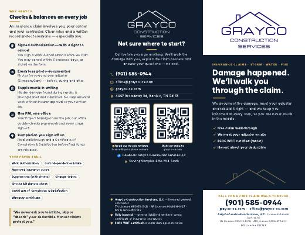
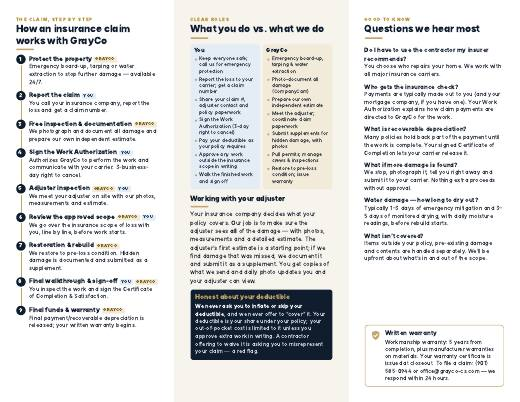
Insurance claims & restoration brochure
Tri-fold · Letter 11 × 8.5 in landscape · 2 pages (outside, inside) · Insurance, water, fire and storm leads
OFFICE brochure-insurance-restoration.pdf
Letter paper · Landscape · Double-sided, flip on SHORT edge · 100% / Actual size (no “Fit to page”) · fold in thirds: inside panels in, cover on top
PRINTSHOP brochure-insurance-restoration-printshop.pdf
11.25 × 8.75 in incl. 0.125 in bleed + crop marks → trims to 11 × 8.5 in · 2-sided: page 1 = outside, page 2 = inside, turn on the SHORT edge · 100 lb gloss text · letter (roll) fold; the left outside panel is the 1/16 in narrower fold-in flap
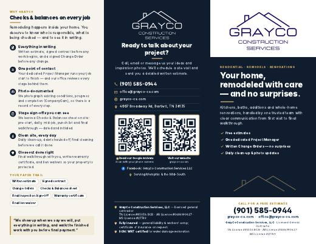
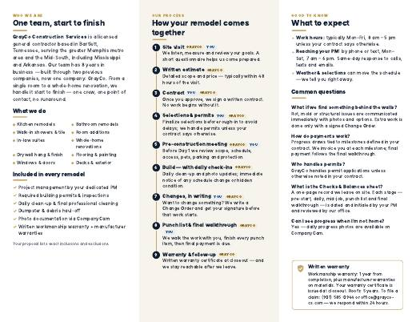
Residential remodeling brochure
Tri-fold · Letter 11 × 8.5 in landscape · 2 pages (outside, inside) · Remodel, kitchen, bath and addition leads
OFFICE brochure-residential.pdf
Letter paper · Landscape · Double-sided, flip on SHORT edge · 100% / Actual size (no “Fit to page”) · fold in thirds: inside panels in, cover on top
PRINTSHOP brochure-residential-printshop.pdf
11.25 × 8.75 in incl. 0.125 in bleed + crop marks → trims to 11 × 8.5 in · 2-sided: page 1 = outside, page 2 = inside, turn on the SHORT edge · 100 lb gloss text · letter (roll) fold; the left outside panel is the 1/16 in narrower fold-in flap
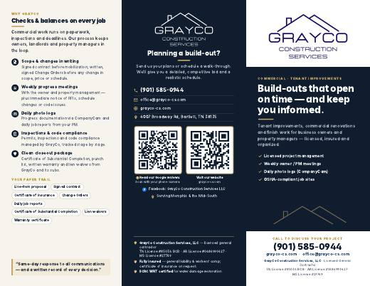
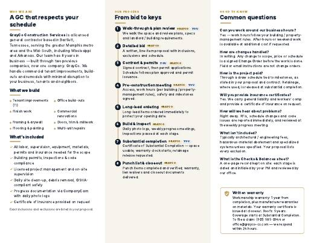
Commercial build-outs brochure
Tri-fold · Letter 11 × 8.5 in landscape · 2 pages (outside, inside) · Commercial TI, build-out and renovation bids
OFFICE brochure-commercial.pdf
Letter paper · Landscape · Double-sided, flip on SHORT edge · 100% / Actual size (no “Fit to page”) · fold in thirds: inside panels in, cover on top
PRINTSHOP brochure-commercial-printshop.pdf
11.25 × 8.75 in incl. 0.125 in bleed + crop marks → trims to 11 × 8.5 in · 2-sided: page 1 = outside, page 2 = inside, turn on the SHORT edge · 100 lb gloss text · letter (roll) fold; the left outside panel is the 1/16 in narrower fold-in flap
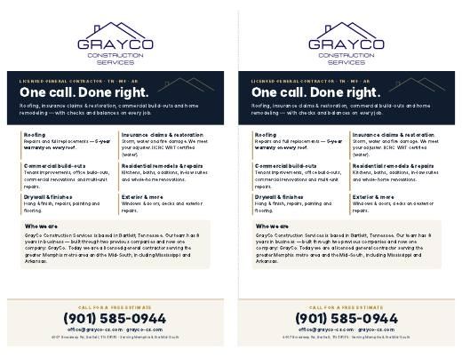
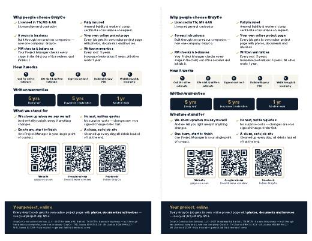
Half-page flyer (general)
5.5 × 8.5 in, front + back · OFFICE: 2 per Letter sheet · Counters, events, leave-behinds, mailers
OFFICE flyer-general.pdf
Letter paper · Landscape · Double-sided, flip on SHORT edge · 100% / Actual size (no “Fit to page”) · cut down the middle → two 5.5 × 8.5 in flyers
PRINTSHOP flyer-general-printshop.pdf
5.75 × 8.75 in incl. 0.125 in bleed + crop marks → trims to 5.5 × 8.5 in · page 1 = front, page 2 = back, flip on the LONG edge · 100 lb gloss text or 14 pt card
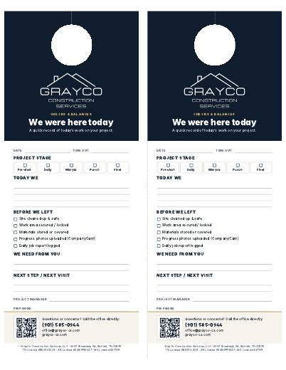
Door hanger — “We were here today”
4.25 × 11 in, single-sided (a fill-in form) · OFFICE: 2 per Letter sheet · Job-site daily check the PM fills in and hangs on the door
OFFICE door-hanger.pdf
Letter paper · Portrait · Single-sided · 100% / Actual size (no “Fit to page”) · cut down the middle, cut out the circle
PRINTSHOP door-hanger-printshop.pdf
4.5 × 11.25 in incl. 0.125 in bleed + crop marks → trims to 4.25 × 11 in · single-sided · 14 pt card with a writable (matte/uncoated) finish · die-cut door hole at the top
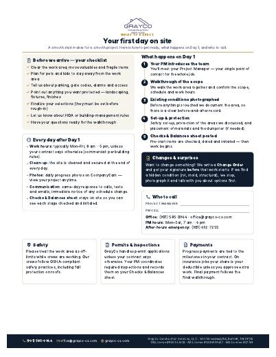
What to expect — your first day on site
Letter 8.5 × 11 in portrait · 1 page · Send with the signed contract / work authorization
OFFICE expect-first-day.pdf
Letter paper · Portrait · Single-sided · 100% / Actual size (no “Fit to page”)
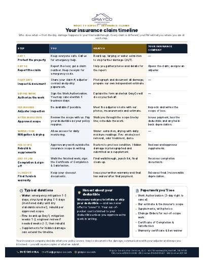
What to expect — insurance claim timeline
Letter 8.5 × 11 in portrait · 1 page · Send with the insurance work authorization
OFFICE expect-insurance-claim-timeline.pdf
Letter paper · Portrait · Single-sided · 100% / Actual size (no “Fit to page”)
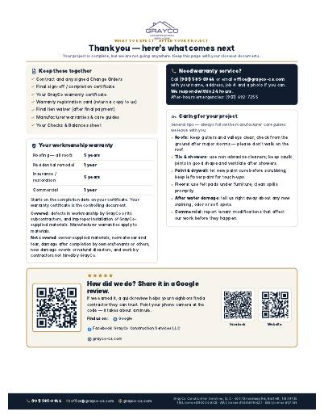
What to expect — after your project
Letter 8.5 × 11 in portrait · 1 page · Closeout packet, with the warranty certificate
OFFICE expect-after-your-project.pdf
Letter paper · Portrait · Single-sided · 100% / Actual size (no “Fit to page”)
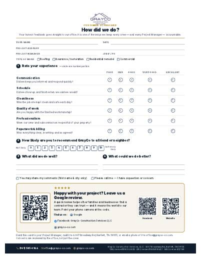
Customer scorecard — “How did we do?”
Letter 8.5 × 11 in portrait · 1 page · Left with the customer at closeout
OFFICE scorecard-customer.pdf
Letter paper · Portrait · Single-sided · 100% / Actual size (no “Fit to page”)
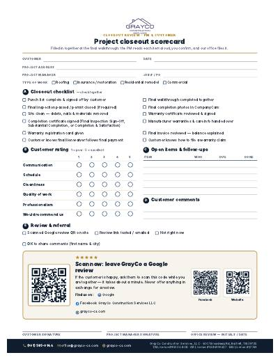
Closeout scorecard (PM + customer)
Letter 8.5 × 11 in portrait · 1 page · Filled in together at the final walkthrough
OFFICE scorecard-closeout-pm.pdf
Letter paper · Portrait · Single-sided · 100% / Actual size (no “Fit to page”)
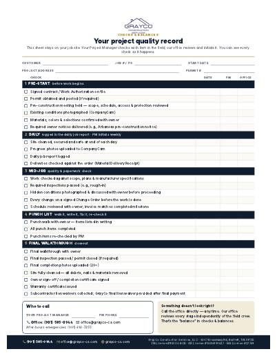
Checks & Balances sheet
Letter 8.5 × 11 in portrait · 1 page · Posted on site from day 1 to closeout
OFFICE checks-and-balances-sheet.pdf
Letter paper · Portrait · Single-sided · 100% / Actual size (no “Fit to page”)